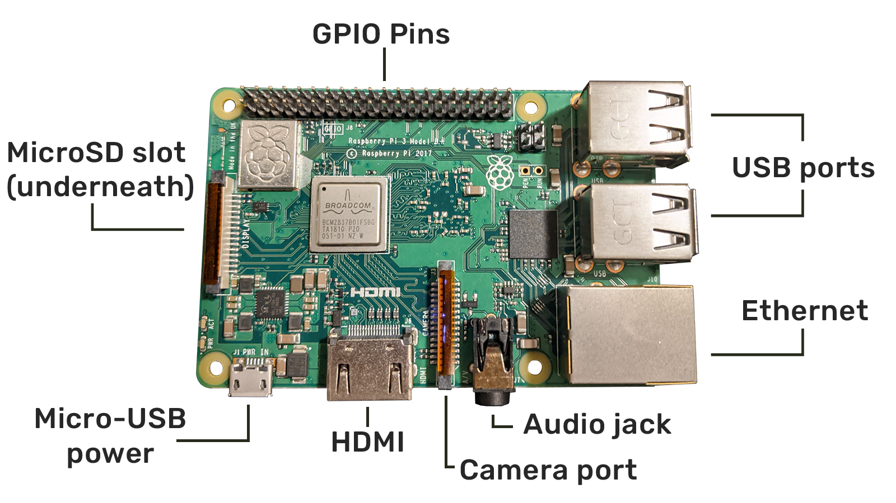
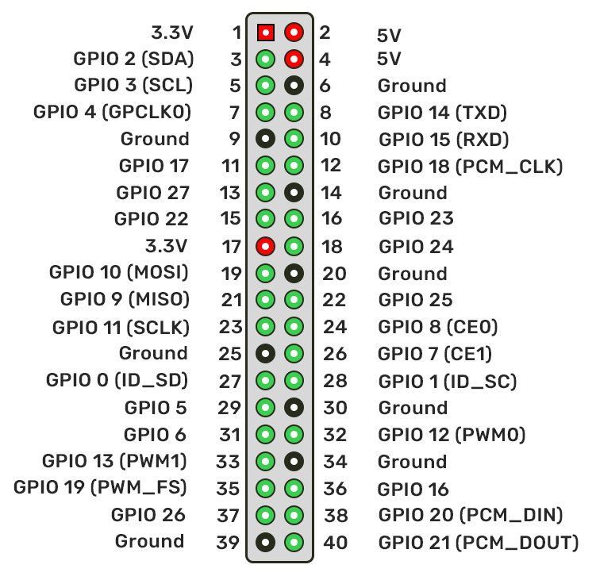

A Raspberry Pi has many ports and 40 pins. The ports depend on the model of Raspberry Pi you have. A Raspberry Pi 3 Model B+ will be used in this example.
On a Raspberry Pi 3 Model B+, there are 4 USB ports, an ethernet port, a micro-USB port for power, an HDMI port, audio jack, camera module port, and microSD card slot.
When it comes to the pinout, it will remain the same for every Raspberry Pi model. These pins allow users to combine digital logic with physical input and action. The pins are numbered, starting with the square pin.
